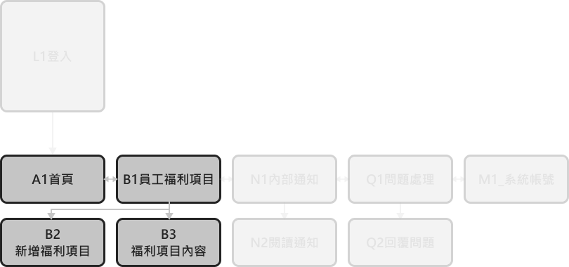
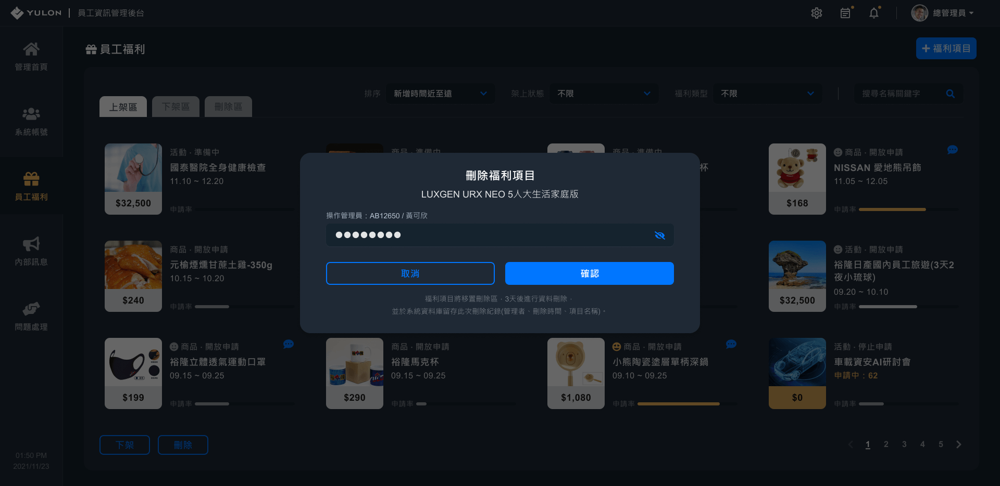
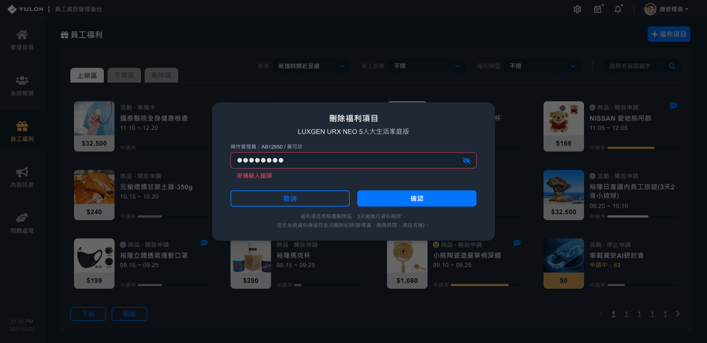
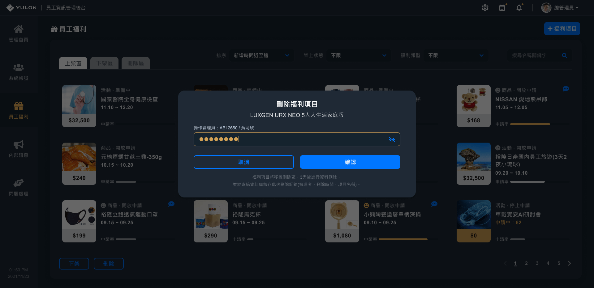
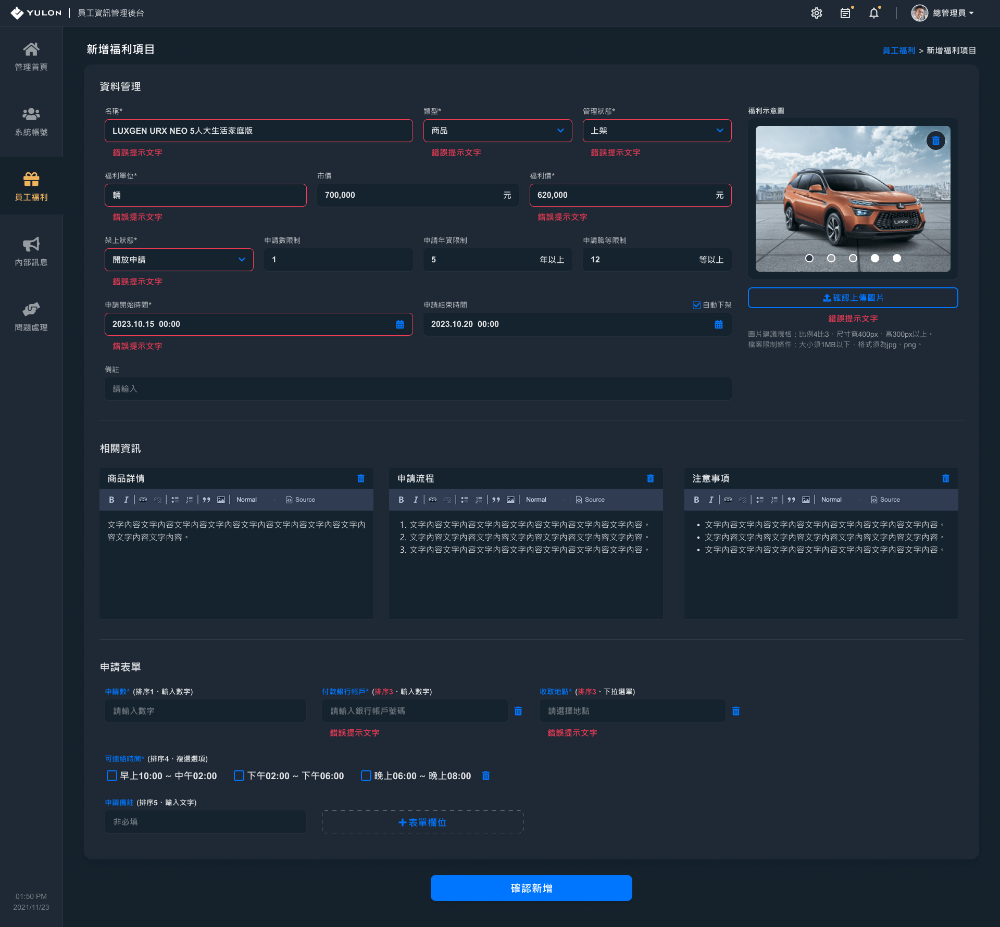
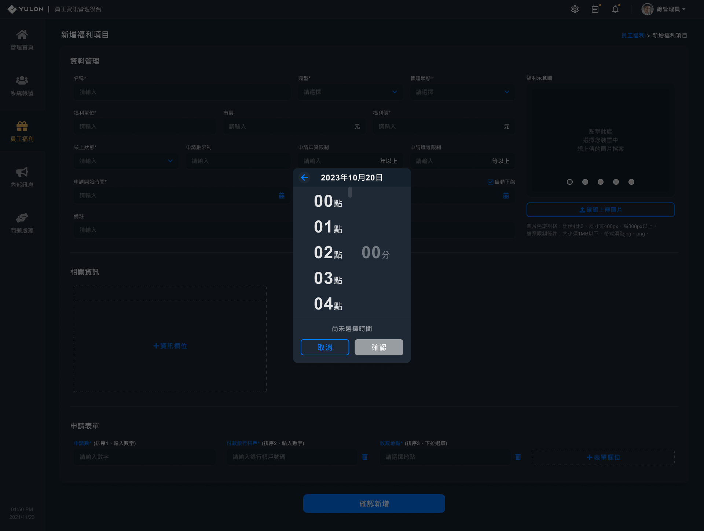
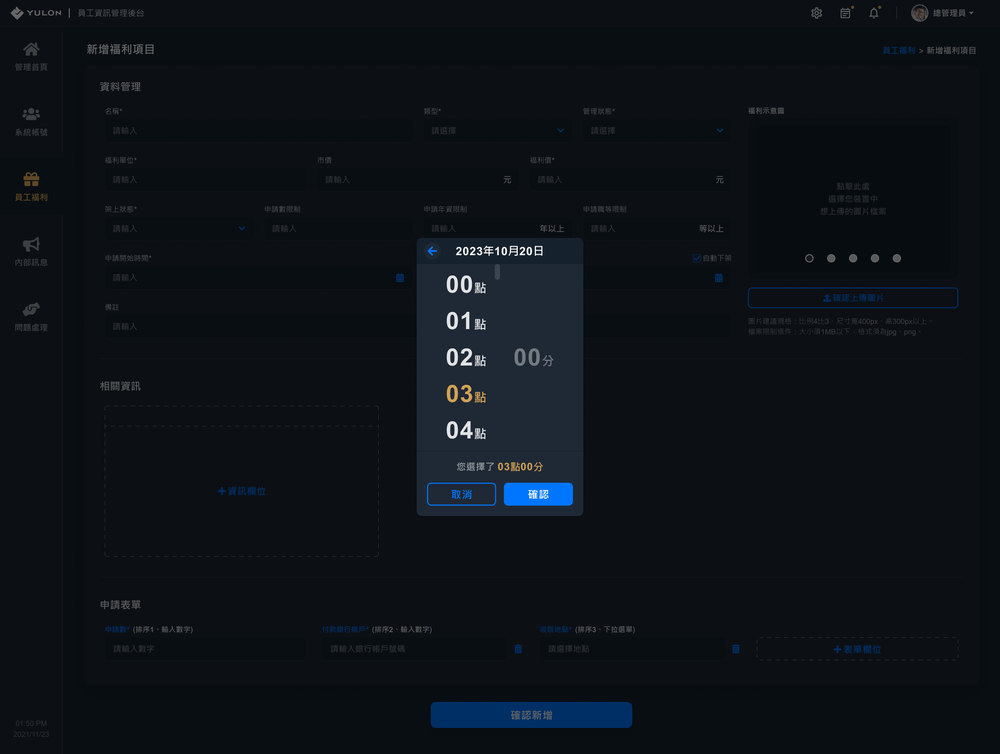
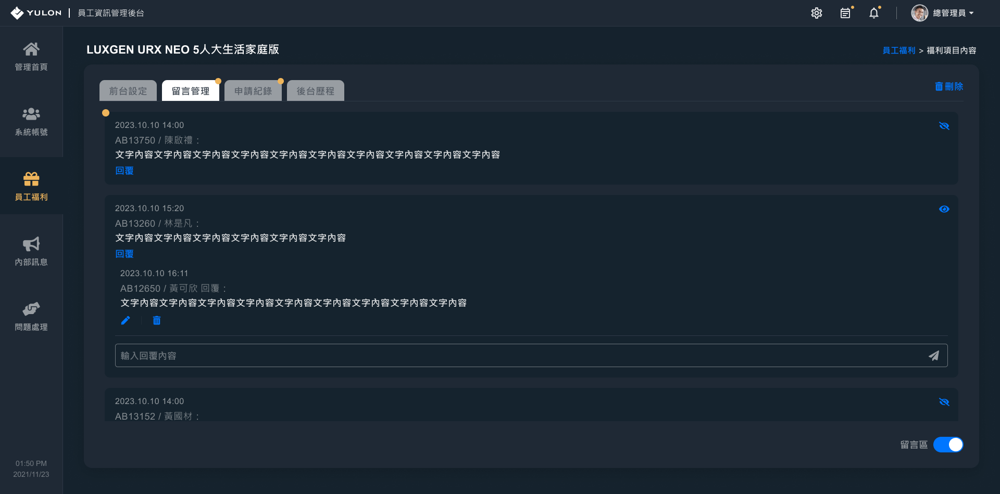

員工資訊APP 後台設計稿
以桌機螢幕解析度寬1920px為例
前導-頁面架構
設計稿展示內容，為亮色區塊之頁面

A1首頁
A1_1.1首頁 理想狀態
B1員工福利項目
B1_1.1員工福利項目-上架區 初始狀態
B1_1.2員工福利項目-上架區 理想狀態
B1_1.3員工福利項目-上架區 空白狀態
B1_1.4員工福利項目-上架區 局部狀態-欄位focus
B1_3.1員工福利項目-刪除項目-彈跳視窗 初始狀態

B1_3.2員工福利項目-刪除項目-彈跳視窗 理想狀態

B1_3.3員工福利項目-刪除項目-彈跳視窗 錯誤狀態

B1_3.4員工福利項目-刪除項目-彈跳視窗 局部狀態 輸入框當前輸入(focus)

B2新增福利項目
B2_1.1新增福利項目 初始狀態
B2_1.2新增福利項目 理想狀態
B2_1.3新增福利項目 錯誤狀態

B2_2.1福利申請時間-設定日期選單-彈跳視窗 初始狀態
B2_2.2福利申請時間-設定日期選單-彈跳視窗 理想狀態
B2_3.1福利申請時間-設定時間選單-彈跳視窗 初始狀態

B2_3.2福利申請時間-設定時間選單-彈跳視窗 理想狀態

B2_4.1設置前台申請表單-新增表單欄位-彈跳視窗 初始狀態
B2_4.2設置前台申請表單-新增表單欄位-彈跳視窗 理想狀態

B2_4.3設置前台申請表單-新增表單欄位-彈跳視窗 錯誤狀態
B2_4.4設置前台申請表單-新增表單欄位-彈跳視窗 局部狀態(欄位為下拉選單、單選選項、複選選項)
B2_5.2設置前台申請表單-修改表單欄位-彈跳視窗 局部狀態 輸入框已變更資料-樣式提示


B3福利項目內容-留言管理
B3_7.1福利項目內容-留言管理 理想狀態
B3_7.2福利項目內容-留言管理 局部狀態 回覆留言

B3_7.3福利項目內容-留言管理 局部狀態 回覆輸入框當前輸入(focus)
B3福利項目內容-申請紀錄
B3_12.1福利項目內容-申請紀錄 理想狀態

B3福利項目內容-後台歷程
B3_16.1福利項目內容-後台歷程 理想狀態
已瀏覽完 裕隆員工資訊APP 管理後台設計稿